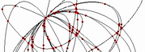
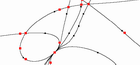
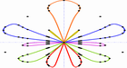

max planck institut
informatik
informatik


Xalci web demo is a web-based application with Macromedia Flash client interface which allows everyone to analyse the topology of algebraic curves and visualize the arrangements of such curves. A real plane algebraic curve is a zero set of a bivariate polynomial f(x,y). These curves split the plane into 0-, 1- and 2-dimensional components, called vertices, arcs and facets of an arrangement. Our software provides a detailed information on an arrangement and allows to interactively explore it by zooming at certain locations or selecting individual features. Xalci can be used for demonstrative and educational purposes. See also our video presentation at SoCG'08. For more information on planar arrangements, see CGAL manual.
Our softwareXalci was developed within Geometric Computing and Computer Algebra group at Max-Planck Insitute for Informatics. A major part of our software has evolved from the former Exacus project (Efficient and Exact Algorithms for Curves and Surfaces) which has later become a part of CGAL. Cgal is a large Open Source software library providing various geometric algorithms designed according to generic programming paradigm as it is widely known from STL. Particularly, we have contributed to a number of Cgal packages including Bivariate Algebraic Kernel for manipulations with algebraic curves and Curved Kernel via Analysis which provides an interface to Arrangements package. CGAL Arrangements is a generic implementation of Bentley-Ottmann sweep-line algorithm which allows us to compute an arrangement of various geometric objects.
Our main goal is to provide efficient, exact (in mathematical sense) and complete (handling highly degenerate cases) algorithms and implementations for various-degree non-linear geometry. Using our software one can compute the arrangements of arbitrary-degree algebraic curves in the plane and embedded on two-dimensional parametric surfaces. We also support boolean operations on polygons bounded by such curve arcs. Our algorithms can handle all degeneracies, such as singularities and intersections of high multiplicity; efficiency is guaranteed through the use of various filtering techniques to avoid expensive computations in many cases (modular filters, floating point filters) and special handling for fixed-degree algebraic curves. Additionally, we utilize the modern graphics hardware to dramatically reduce the cost of expensive symbolic arithemtic.
A table below shows Xalci's software hierarchy starting from the third-party libraries in the bottom (providing various data structures, exact number types, graphics support, etc.) all the way up to the generic arrangements algorithm from Cgal. Note that, the distinction between middle-level libraries (ConiX, CubiX, QuadriX and AlciX) providing the analyses of conics, cubics, projected quadrics and arbitrary-degree algebraic curves is merely kept for historical reasons as it used to be in Exacus. The major part of this functionality has been subsumed by Bivariate algebraic kernel.
| CGAL Arrangements | ||||||||||
| Curved Kernel via Analysis |  ConiX (CnX) |
 CubiX (CbX) |
QuadriX (QdX) |
 AlciX (AcX) |
||||||
| Bivariate Algebraic Kernel | ||||||||||
| Univariate Algebraic Kernel (Real Solve) | ||||||||||
| Cgal library support | ||||||||||
| ||||||||||
To compute and manipulate algebraic arrangements, we utilize the following algorithms:
Max-Planck-Institut für Informatik, Geometric Computing Group